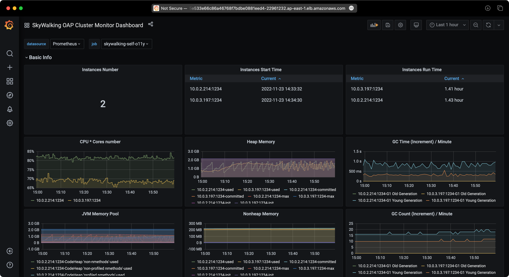

How to run Apache SkyWalking on AWS EKS and RDS/Aurora
Introduction
Apache SkyWalking is an open source APM tool for monitoring and troubleshooting distributed systems, especially designed for microservices, cloud native and container-based (Docker, Kubernetes, Mesos) architectures. It provides distributed tracing, service mesh observability, metric aggregation and visualization, and alarm.
In this article, I will introduce how to quickly set up Apache SkyWalking on AWS EKS and RDS/Aurora, as well as a couple of sample services, monitoring services to observe SkyWalking itself.
Prerequisites
We can use the AWS web console or CLI to create all resources needed in this tutorial, but it can be too tedious and hard to debug when something goes wrong. So in this artical I will use Terraform to create all AWS resources, deploy SkyWalking, sample services, and load generator services (Locust).
Architecture
The demo architecture is as follows:
graph LR
subgraph AWS
subgraph EKS
subgraph istio-system namespace
direction TB
OAP[[SkyWalking OAP]]
UI[[SkyWalking UI]]
Istio[[istiod]]
end
subgraph sample namespace
Service0[[Service0]]
Service1[[Service1]]
ServiceN[[Service ...]]
end
subgraph locust namespace
LocustMaster[[Locust Master]]
LocustWorkers0[[Locust Worker 0]]
LocustWorkers1[[Locust Worker 1]]
LocustWorkersN[[Locust Worker ...]]
end
end
RDS[[RDS/Aurora]]
end
OAP --> RDS
Service0 -. telemetry data -.-> OAP
Service1 -. telemetry data -.-> OAP
ServiceN -. telemetry data -.-> OAP
UI --query--> OAP
LocustWorkers0 -- traffic --> Service0
LocustWorkers1 -- traffic --> Service0
LocustWorkersN -- traffic --> Service0
Service0 --> Service1 --> ServiceN
LocustMaster --> LocustWorkers0
LocustMaster --> LocustWorkers1
LocustMaster --> LocustWorkersN
User --> LocustMaster
As shown in the architecture diagram, we need to create the following AWS resources:
- EKS cluster
- RDS instance or Aurora cluster
Sounds simple, but there are a lot of things behind the scenes, such as VPC, subnets, security groups, etc. You have to configure them correctly to make sure the EKS cluster can connect to RDS instance/Aurora cluster otherwise the SkyWalking won’t work. Luckily, Terraform can help us to create and destroy all these resources automatically.
I have created a Terraform module to create all AWS resources needed in this tutorial, you can find it in the GitHub repository.
Create AWS resources
First, we need to clone the GitHub repository and cd into the folder:
git clone https://github.com/kezhenxu94/oap-load-test.git
Then, we need to create a file named terraform.tfvars to specify the AWS region and other variables:
cat > terraform.tfvars <<EOF
aws_access_key = ""
aws_secret_key = ""
cluster_name = "skywalking-on-aws"
region = "ap-east-1"
db_type = "rds-postgresql"
EOF
If you have already configured the AWS CLI, you can skip the aws_access_key and aws_secret_key variables.
To install SkyWalking with RDS postgresql, set the db_type to rds-postgresql, to install SkyWalking with
Aurora postgresql, set the db_type to aurora-postgresql.
There are a lot of other variables you can configure, such as tags, sample services count, replicas, etc., you can find them in the variables.tf.
Then, we can run the following commands to initialize the Terraform module and download the required providers, then create all AWS resources:
terraform init
terraform apply -var-file=terraform.tfvars
Type yes to confirm the creation of all AWS resources, or add the -auto-approve flag to the terraform apply
to skip the confirmation:
terraform apply -var-file=terraform.tfvars -auto-approve
Now what you need to do is to wait for the creation of all AWS resources to complete, it may take a few minutes. You can check the progress of the creation in the AWS web console, and check the deployment progress of the services inside the EKS cluster.
Generate traffic
Besides creating necessary AWS resources, the Terraform module also deploys SkyWalking, sample services, and Locust load generator services to the EKS cluster.
You can access the Locust web UI to generate traffic to the sample services:
open http://$(kubectl get svc -n locust -l app=locust-master -o jsonpath='{.items[0].status.loadBalancer.ingress[0].hostname}'):8089
The command opens the browser to the Locust web UI, you can configure the number of users and hatch rate to generate traffic.
Observe SkyWalking
You can access the SkyWalking web UI to observe the sample services.
First you need to forward the SkyWalking UI port to local
kubectl -n istio-system port-forward $(kubectl -n istio-system get pod -l app=skywalking -l component=ui -o name) 8080:8080
And then open the browser to http://localhost:8080 to access the SkyWalking web UI.
Observe RDS/Aurora
You can also access the RDS/Aurora web console to observe the performance of RDS/Aurora instance/Aurora cluste.
Test Results
Test 1: SkyWalking with EKS and RDS PostgreSQL
Service Traffic


RDS Performance


SkyWalking Performance



Test 2: SkyWalking with EKS and Aurora PostgreSQL
Service Traffic


RDS Performance


SkyWalking Performance


Clean up
When you are done with the demo, you can run the following command to destroy all AWS resources:
terraform destroy -var-file=terraform.tfvars -auto-approve